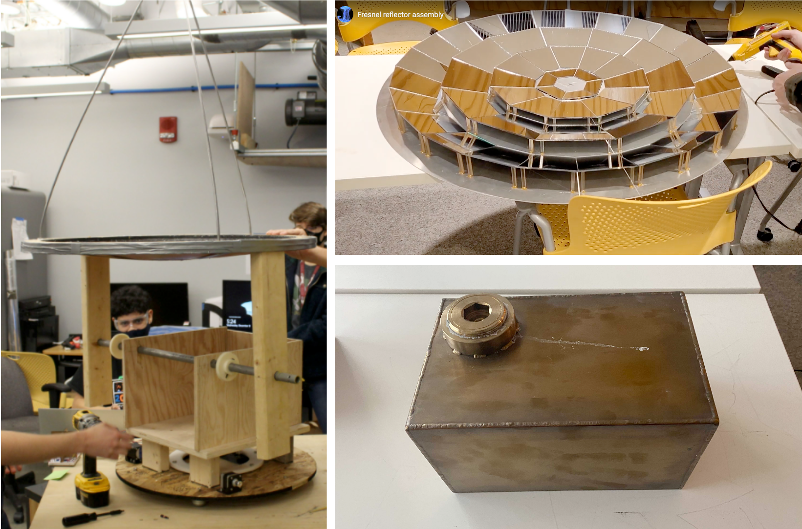

<!-- <topbar style="display:none;">
<item><a href="./index.html">Home</a></item>
<item><a href="./about.html">About</a></item>
</topbar> -->
<br> <br>
Hello! I'm Nathan Melenbrink, instructor for PS70. I've been teaching digital fabrication and rapid prototyping since 2010, and try my best to practice what I preach. The skills we teach in PS70 are skills that I use daily for research and design projects. For example, please see below.
<!-- ### MIT CoE Climate & Sustainability Systems
I am also an instructor in the NEET program at MIT, where I teach design & prototyping courses related to climate and renewable energy. This is a WIP prototype of a solar cooker that works by concentration solar energy into a thermal salt battery. The salt battery stays at around 300C for several hours, making it suitable for heating and cooking after sundown.
 -->
### VaultBot
A recent project of mine was a machine that builds vaults from identical blocks. The idea is that in a scaled-up version the blocks could be filled with regolith and used to assemble radiation shields to protect extraterrestrial habitats. Other people have proposed additive manufacturing with regolith for this purpose. I think this method of essentially converting the regolith into a discrete material could be more tractable, as additive manufacturing is dependent on the physical and chemical properties of regolith (which vary considerably).
Previous work (from multiple labs) has demonstrated impressive discrete assembly robots, but (to my knowledge) none that were able to build spanning structures that support the weight of the robot.
<iframe width="846" height="480" src="https://www.youtube.com/embed/dMgXiM8jhqI?start=23" frameborder="0" allow="accelerometer; autoplay; clipboard-write; encrypted-media; gyroscope; picture-in-picture" allowfullscreen></iframe>
I am also interested in instrumenting discrete building blocks with capacitive sensors to provide force feedback during assembly.
<img src='https://nathanmelenbrink.github.io/ps70/data/nathan/img/2.png' alt='kits' width="846">
### Machine Ecology
My primary research interest is in using automation for environmental restoration and monitoring. Recently, I've been working with a group from the Netherlands called [The Weather Makers](https://www.theguardian.com/environment/2021/mar/20/our-biggest-challenge-lack-of-imagination-the-scientists-turning-the-desert-green), whose long-term mission is to [re-green the Sinai](https://www.greenthesinai.com/home). In the long term, that will require mobile robots (like the one described below) to perform monotonous tasks like digging trenches or spreading compost over large watershed regions. However, in the short term, there is an immediate need for a low-cost, deployable water quality analysis device. My approach is to use conventional aquarium test kits and computer vision. Here's a very early prototype:
<video width="640" height="480" controls>
<source src="./img/pH_demo.mp4" type="video/mp4" >
</video>
### Pile/post Driving
Environmental restoration tasks are typically repetitive and needed in harsh, remote environments, making them suitable for automation. Tasks like driving short sheet pile walls could be used to build check dams to regulate runoff and erosion, while driving posts to form sand fences is an ideal way to naturally build dunes and protect coats.
<!-- Useful structures in the built environment are not constructed with discrete materials alone. Rather than resting atop the ground, they must be anchored to it. This seemed to be overlooked, so I made a robot to perform simple anchoring tasks. -->
<!-- <img src='http://nathanmelenbrink.com/18_romu/1.jpg' alt='romu' width="846">
-->
<img src='https://nathanmelenbrink.github.io/ps70/data/nathan/img/3.png' alt='kits' width="846">
<iframe width="846" height="480" src="https://www.youtube.com/embed/ajL8XKIQBYU?start=20" frameborder="0" allow="accelerometer; autoplay; clipboard-write; encrypted-media; gyroscope; picture-in-picture" allowfullscreen></iframe>
### (Remote) PS70:
For remote teaching, we prepared fab-at-home kits for each student (much credit to Rob Hart, who used to co-teach the course and helped with kits).
<img src='https://nathanmelenbrink.github.io/ps70/data/kit2021.png' alt='kits' width="846">
In 2021, since students unfortunately were not able to use the laser cutter directly, I included a 12x12" plywood laser-cut sheet in their kits. The parts can be punched out and combined with simple 3D printed parts in the kit to make, e.g., an H-Bot drawing machine, or two linear stages.
<img src='https://nathanmelenbrink.github.io/ps70/data/kitmachines.png' alt='kit machines' width="846">
<!-- ### HTMAA 2014
I spent time in HTMAA exploring drawing with machines. I made a cable-actuated wall plotter for my final project.
<iframe width="846" height="480" src="https://www.youtube.com/embed/xMw1Uj4MwNo?start=90" frameborder="0" allow="accelerometer; autoplay; clipboard-write; encrypted-media; gyroscope; picture-in-picture" allowfullscreen></iframe>
I also wrote some gcode generators to make big paintings on the Shopbot.
<iframe width="846" height="480" src="https://www.youtube.com/embed/EWtCOREeaY0" frameborder="0" allow="accelerometer; autoplay; clipboard-write; encrypted-media; gyroscope; picture-in-picture" allowfullscreen></iframe> -->
### Architecture
I worked as an architect and facade specialist between 2008-2014 mostly in Shanghai, China.
<img src='http://nathanmelenbrink.com/13_ningbo/0.jpg' alt='ningbo' width="846">
<iframe width="846" height="480" src="https://www.youtube.com/embed/YEkbzrOjcqs?start=55" frameborder="0" allow="accelerometer; autoplay; clipboard-write; encrypted-media; gyroscope; picture-in-picture" allowfullscreen></iframe>
You can see more of my work [here](http://nathanmelenbrink.com/).
<img src='https://nathanmelenbrink.github.io/ps70/data/nathan/img/1.png' alt='kits' width="846">